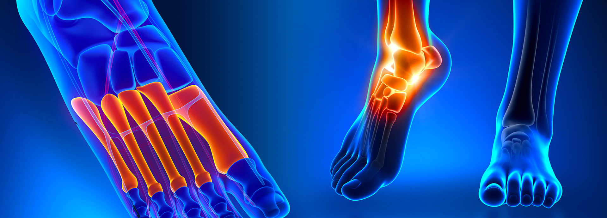
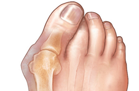
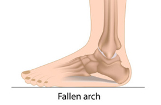
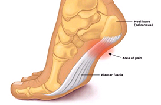
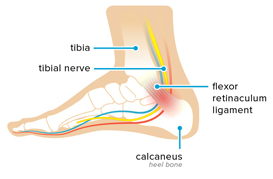

හැඳින්වීම

පාදය හා වළලුකර ආශ්රිත කොටස් වල ශල්ය කර්ම.
පාදය හා වළලුකර ප්රදේශ කියන්නේ අපට ඇවිදීමට උපකාරීවන සැකිල්ලේ ඉතාමත් වැදගත් කොටසක්. ශරීරයේ බර දරා ගැනීම, බර පොළොවට සම්ප්රේෂණය හා අප ඇවිදින විට ශරීරය පොළොවෙන් ඉදිරියට තල්ලු කිරීමට පාදය හා වළලු කර උපකාරී වෙනවා. මෙම කොටස් වල සුවතාවය රැක ගැනීම හා අබාද පවතීනම් ඒවා සකසා ගැනීම, ගැටලුවකින් තොරව පාද දිඟු කල් පවත්වා ගැනීමට හා වේදනාවකින් තොරව පාද භාවිතයට ඉඩ සැලසෙනවා.

මාපට ඇඟිල්ල හා සෙසු ඇඟිලි.
සුලබවම දක්නට ලැබෙන්නේ මාපට ඇඟිල්ල පිටතට නැමීමට පටන් ගැනීමයි. මේ සමගම ඇඟිල්ලේ පාමුල කොටසද ඉදිමීමක් පෙන්නුම් කරනවා. විටකදී මෙම ඉදිමුම රතුවී වේදනාකාර ප්රදාහයකට ලක්වෙනවා. කල් ගත වීමත් සමග මාපට ඇඟිල්ල දෙවන ඇඟිල්ලට ඉහලින් පිහිටනවා. මෙම Hallux valgus තත්ත්වය සුළු සැත්කමකින් සුව කරන්න පුළුවන්. සෙසු ඇඟිලි එකක් හෝ කීපයක ඇඟිලි තුඩු ප්රදේශ ඇවිදින විට ගෑවීමට පටන් ගැනීමක් දියවැඩිය රෝගීන්ගේ හා ආතරයිටිස් රෝගීන්ගේ දක්නට ලැබෙනවා. මෙම ඇඟිලි වකුටු වීමද සුළු ශල්ය කර්මයකින් සදා ගත හැකියි.

කකුලේ මැද කොටස
මෙම කොටසේ මුලිකවම ආතරයිටිස් රෝගී තත්ත්වයන් මෙහි ඇති කුඩා සංදී වලට බලපෑම නිසා පාදයේ මැද කොටසේ වේදනාව හා ඉදිමීම හටගන්නවා. දියවැඩියා
රෝගීන්ගේ මෙම හන්දි හා පටක කොටස් විනාශ වීම නිසා පාදයේ ආකෘතිය බිඳවැටී පාදය පැතලි බවකට පත්වෙනවා. ශරීරයේ බර සම්ප්රේෂණ ක්රියාවලිය මෙනිසා බින්දවැටීමට ලක්වෙනවා. යටි පතුලේ අසාමාන්ය ගනවීම් හා තුවාල ඇතිවීමට මෙයට දායක වෙනවා. මෙම අසාමාන්යත සුළු සැත්කම් මගින් සකසා ගතහැකියි.

විලුඹ යට ඇතිවන වේදනාව
මෙම තත්ත්වය මුලින්ම ඇතිවන විට, උදැසන ඇඳෙන් බැස තබන මුල් පියවර කිහිපය වේදනාත්මක වෙනවා. කාලයත් සමග, කෙටි විවේකයකින් පසු පවා නැවත ඇවිදීම ආරම්භ කරනවිට වේදනාව ඇති වෙනවා. පෙති වර්ග, ඉන්ජෙක්ෂන් හා සපත්තුවට යොදන මෘදු පලදිනා මගින් වේදනාව සමනය කරගත හැකියි. මේ කිසිදෙකින් වත් මෙතෙක් ඔබට නිට්ටාවට සුවයක් ලැබී නැත්නම් අප අමතන්න.

විලුඹ දෙපස වේදනාව
වළලු කර දෙපසින් ඇති පේශි ඛණ්ඩරා කොටස් වලට පරිබාහිරව සිදුවන ඉදිමිමකින් මේ වේදනාව හටගන්නවා. බෙහෙත් පෙති වර්ග, ආලේපන, වළලුකර පළඳනා වලින් සුවයක් නැතිනම් සුළු සැත්කමක් මගින් ගුණයක් ලබාගත හැකියි.